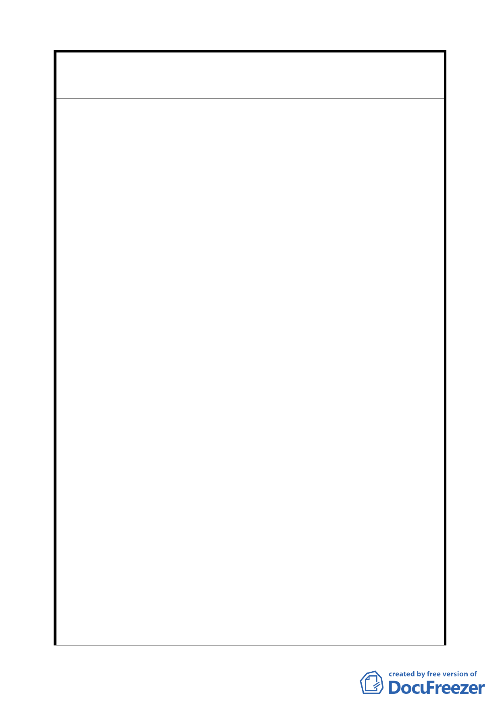

變更臺北市文山區頭廷段二小段部分 219、243 地號、頭廷段
案 名 三小段部分 257、332 地號暨政大段二小段部分 8、316 地號
等保護區土地為電力設施用地計畫案
市發展至鉅。貴局應嚴以把關。
三、貴府興建中之貓空纜車，從都市計畫變更之公開展覽、
現場會勘乃至說明會等先期作業，本社區居民完全被蒙
在鼓裡，而全線纜車經過所造成的公害，影響最大者亦
為本社區。相距僅數十公尺，貴府卻刻意隱瞞不讓本區
參與，如今高壓路線又要強行在緊鄰本社區山坡地保護
區之稜線處施作，情何以堪！本社區實無力對抗官府與
台電，請各位大員盡力拯救環繞本市之青山綠野山坡地
保護區及維護本市之都市環境景觀。
四、姑且不論纜車營運後對本社區之公害，貴府花費鉅資興
建纜車，居然與台電深美──大豐 161KV 高壓電線並行
且平均相距僅約百公尺，五百公尺之纜車路徑上即出現
五座高壓鐵塔怪物，甚且穿越 161 高壓電線下方四公尺
而過，令人不可思議！是否要讓纜車內的遊客傾聽鐵塔
礙子遇潮時所發出令人畏懼之撕裂聲或尋求穿越 161 高
壓下之刺激感？況且本區恰為臺北盆地落雷集中處，樹
木常遭電擊，纜車穿越 161 高壓電線而過難保車廂內乘
客安全，貴府實負有防範未然之責任。
五、台電為全國最大事業體又屬國營機構，十分清楚高壓鐵
塔之設置幾乎為「永久性」建築不易遷離，故設置的位
置必須以都市景觀及遠離住宅社區為第一考量，不幸，
台電卻夾其龐大資源，我行我素，高壓輸配電路任其設
定鐵塔到處設立；將中央山脈上與野生動物為鄰之自由
規劃習慣全盤移植至人口稠密、地價昂貴的都市土地（含
都市之肺之保護區）依樣畫葫蘆，更以「臨時性」構造
物規避一切建管法令之約束，試問，RC 塔座高五公尺、
直徑二公尺及基礎深達 14 公尺以上屬臨時性構造物
嗎？本市山坡地形多屬急陡形，土質鬆軟，政府明令平
均坡度超過百分之三十即屬坡度陡峭不得開發使用，本
市政府更將坵塊方格邊長嚴格限制在 10 公尺以下用以
計算平均坡度，唯獨台電塔之深基礎開挖不受限制，十
分不合理。企盼都市發展局速邀相關單位制訂法令，要
求台電高壓電纜線地下化或遠離都市住宅區 500 公尺以
上設置，且不得破壞本市天空線之景觀。
六、本社區必須再次重申，並非反對貓空纜車或台電輸配線
之設置，反對的是路線之選擇完全不考慮定居逾 30 年，
四